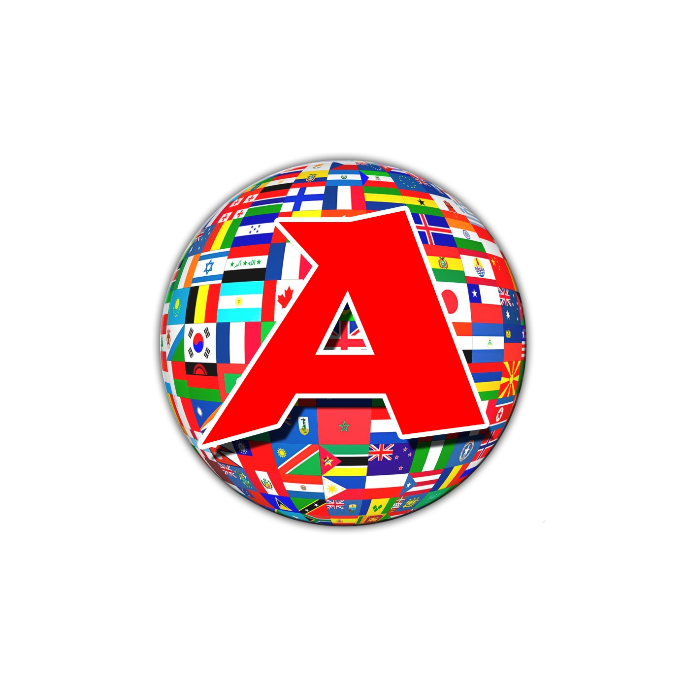
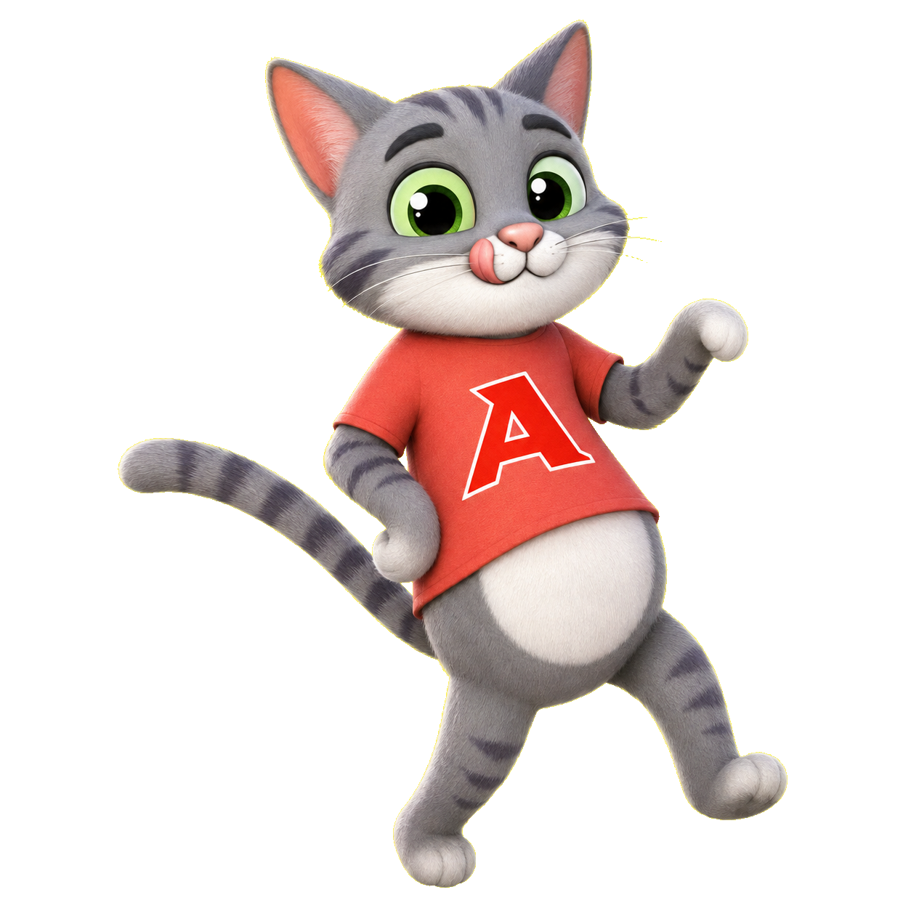
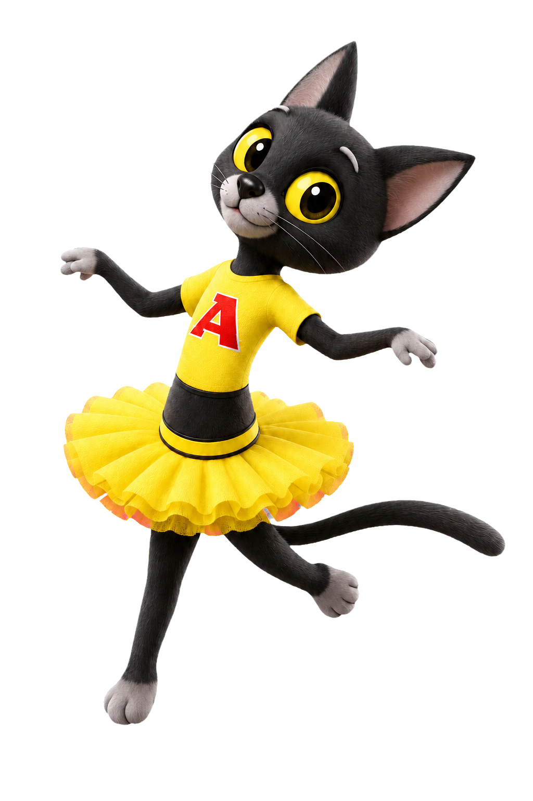
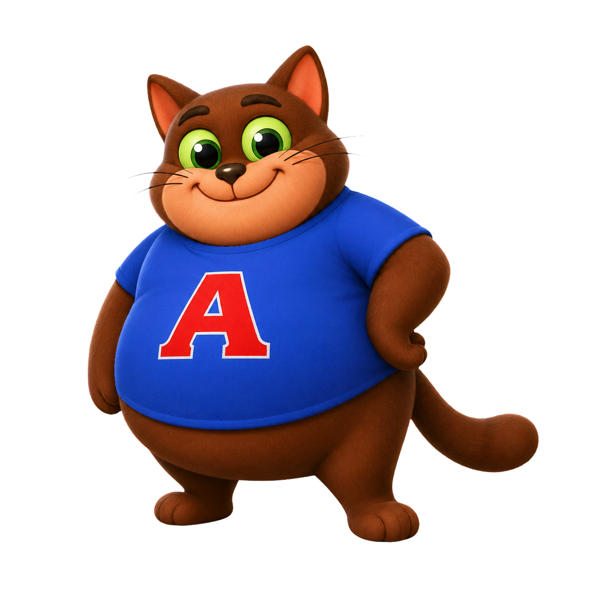
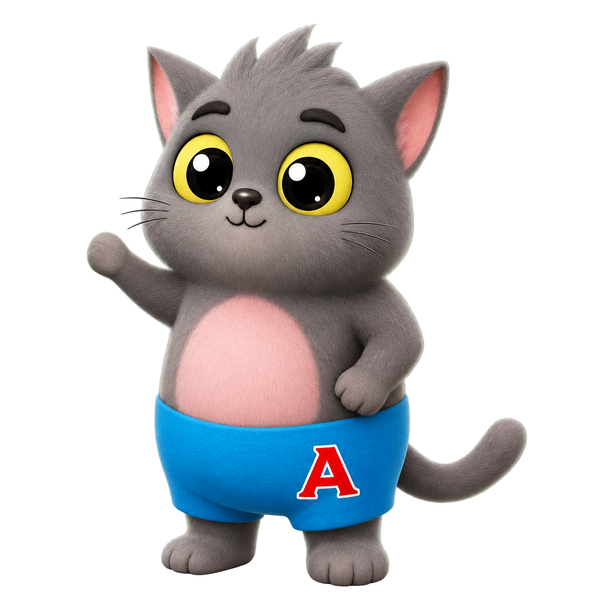
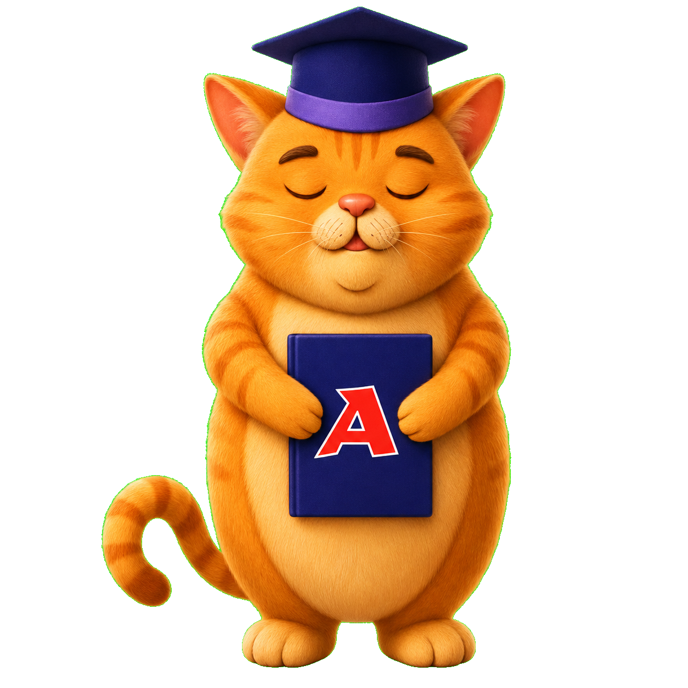
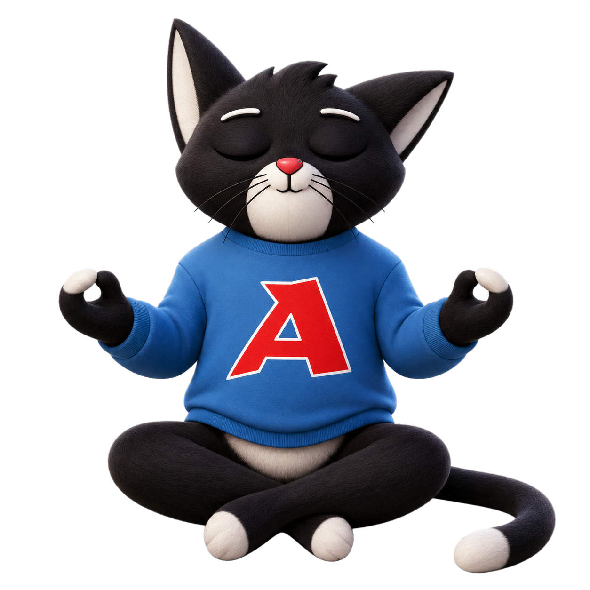
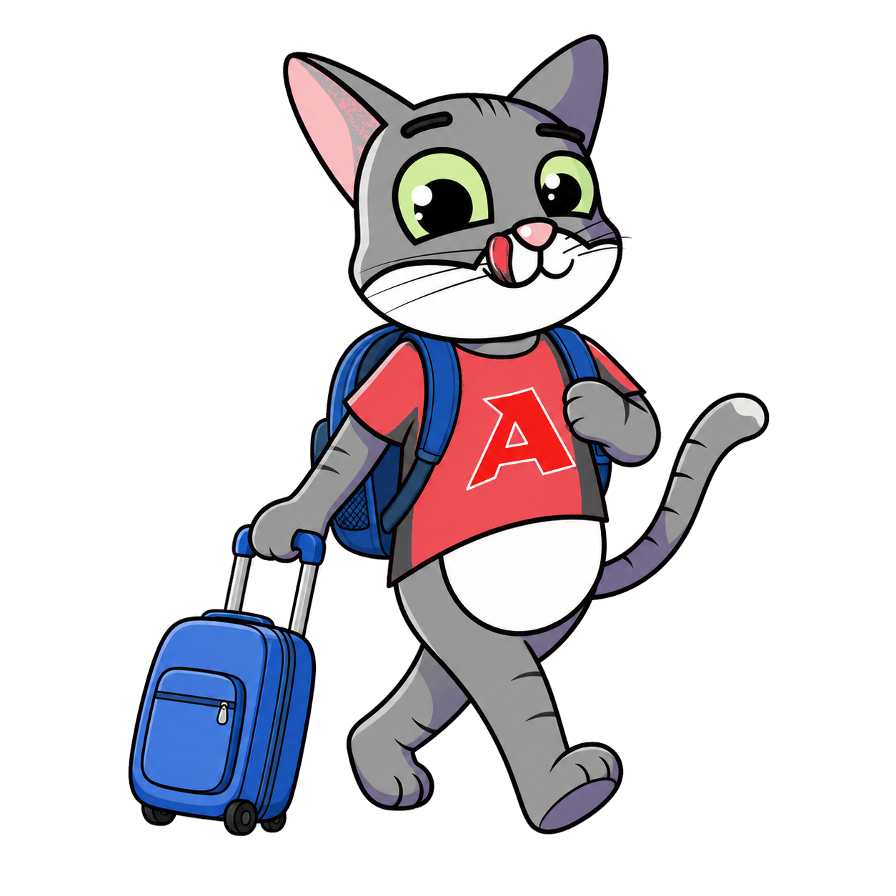
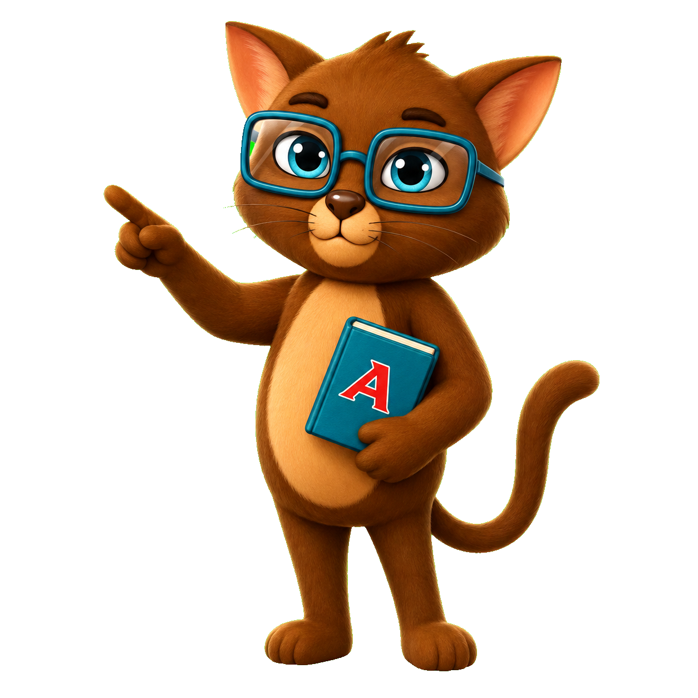

Лили
мама
Заботливая, добрая и всегда готова поддержать.

игровая мастерская＋Познакомьтесь с семьёй котиков АюлитА. У каждого героя свой характер, талант и особая роль в наших образовательных приключениях.
Познакомиться с героями ↓Они будут помогать, подбадривать
и проходить игровые миссии вместе с ребёнком.
мама
Заботливая, добрая и всегда готова поддержать.

старший сын
Любознательный путешественник и смелый исследователь.

учитель
Объясняет сложное просто и радуется каждому успеху.

танцовщица
Творческая, лёгкая и очень любит движение.

друг семьи
Весёлый друг, который превращает задания в приключения.
дочка
Внимательная малышка с отличной памятью.

младший сын
Любопытный непоседа, который не боится пробовать.
папа и тренер
Сильный, добрый и учит не сдаваться.

директор
Спокойный руководитель и хранитель игровой вселенной.

философ
Задаёт интересные вопросы и помогает размышлять.
Работают на компьютере,
планшете и телефоне.

Найдите страны на карте и изучите столицы, флаги, национальности и достопримечательности.
Запоминайте яркие фотографии еды, а затем соединяйте английские слова с картинками.
Запоминайте простые мелодии, повторяйте их и учитесь играть по нотам на пианино.
Распределяйте английские слова по категориям и спасите все карточки.
Раздел 01
Собирайте заказы по английским рецептам и вовремя обслуживайте несколько кофемашин.
Раздел 02
Составляйте новые слова из букв большого слова, открывайте уровни и набирайте очки вместе с Филом.
Раздел 03

Ловите падающие примеры: от сложения до умножения и деления двузначных чисел.